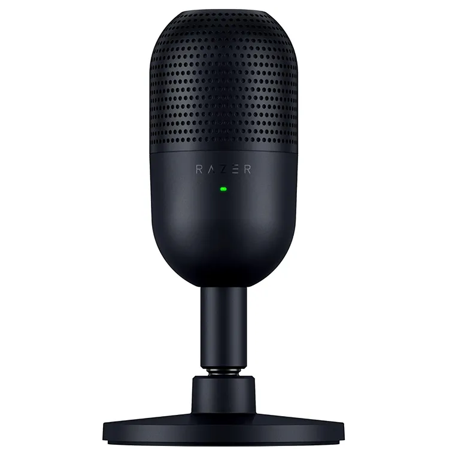

Razer Seiren V3 Mini
El Razer Seiren V3 Mini es un micrófono USB compacto con condensador, diseñado para streaming, videollamadas y grabación de voz clara. Su patrón supercardioide captura tu voz con precisión mientras reduce el ruido ambiental.
$60
- Micrófono USB compacto con condensador.
- Patrón polar supercardioide para mejor aislamiento de la voz.
- Plug and Play: sin necesidad de drivers adicionales.
- Diseño minimalista y portátil.
- Compatible con Razer Synapse para ajustes avanzados.